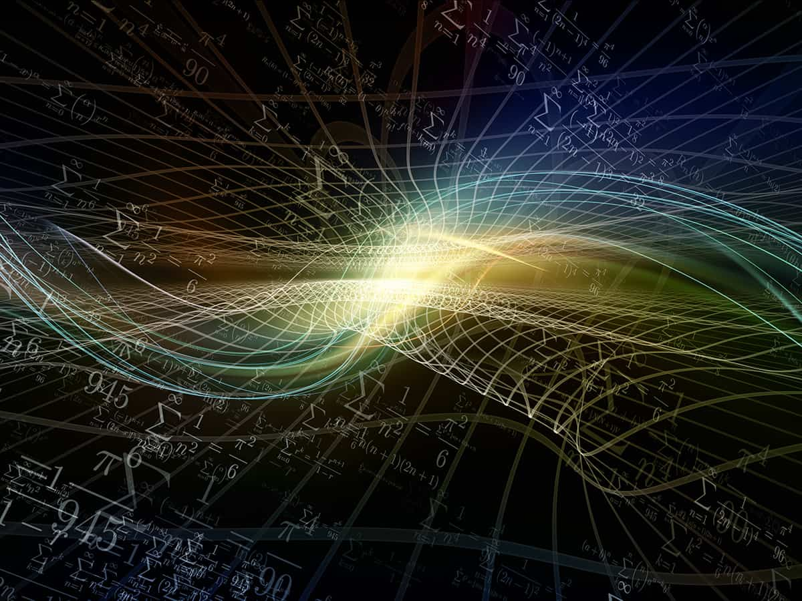

Algorithmes Quantiques
L'informatique quantique bouscule les fondements du calcul en explorant les lois de la mécanique quantique. Contrairement aux algorithmes classiques qui opèrent sur des bits binaires (0 ou 1), l'informatique quantique repose sur des qubits (bits quantiques). Ces éléments fondamentaux possèdent la propriété fascinante de la superposition, pouvant exister simultanément dans deux états : 0 et 1. Grâce à ce principe, un seul qubit peut explorer une multitude de possibilités à la fois, décuplant sa puissance de calcul par rapport à un bit classique.
Algorithmes Quantiques : Les chefs d'orchestre du calcul quantique
Les algorithmes quantiques jouent un rôle crucial en informatique quantique, semblables aux programmes informatiques du monde classique. Ils représentent des séquences d'opérations quantiques, appelées portes quantiques, appliquées aux qubits pour les manipuler et les faire interagir. Ces portes quantiques, à l'image de leurs homologues classiques (ET, OU, NON), effectuent des opérations logiques sur les qubits, modifiant leur état et les faisant évoluer vers un état final.
Fonctionnement d'un algorithme quantique
- Initialisation : On définit l'état initial des qubits, généralement l'état |0> (zéro) pour tous les qubits.
- Application des portes quantiques : Les portes quantiques sont appliquées successivement, enchaînant des opérations logiques (Hadamard, CNOT, etc.) sur les qubits, les faisant évoluer et créant des enchevêtrements quantiques (corrélations instantanées entre plusieurs qubits).
- Mesure : La mesure de l'état final d'un ou plusieurs qubits permet d'obtenir le résultat du calcul. Cependant, la nature probabiliste de la mécanique quantique ne permet d'obtenir qu'une probabilité d'obtenir un certain résultat, nécessitant parfois des répétitions du circuit pour affiner la réponse.
Exemples d'algorithmes quantiques et leurs applications
Les algorithmes quantiques, en tirant parti des propriétés uniques des qubits, ouvrent la voie à de nombreuses applications révolutionnaires dans divers domaines :
- Briser le cryptage actuel : Certains algorithmes quantiques, comme Shor, pourraient rendre obsolètes les méthodes de cryptage actuelles, telles que RSA, utilisées pour sécuriser les transactions en ligne. Cela nécessiterait le développement de nouveaux protocoles cryptographiques plus résistants aux attaques quantiques.
- Accélérer la simulation de systèmes complexes : La modélisation de molécules complexes, de nouveaux matériaux ou de systèmes financiers pourrait être considérablement accélérée grâce à la puissance des algorithmes quantiques. Cela permettrait d'explorer de nouvelles pistes de recherche et de développement dans de nombreux domaines, comme la conception de nouveaux médicaments ou la découverte de matériaux aux propriétés inédites.
- Optimisation et logistique : L'optimisation de processus de production, de gestion des stocks ou de trafic routier pourrait être améliorée grâce à la capacité des algorithmes quantiques à explorer de nombreuses possibilités simultanément, permettant de trouver des solutions optimisées plus rapidement.
- Découverte de nouveaux matériaux : La simulation de systèmes complexes à l'échelle atomique permet de prédire les propriétés de nouveaux matériaux, ouvrant la voie à des avancées technologiques dans des domaines comme l'énergie, l'électronique et l'aérospatial.
- Développement de nouveaux médicaments : La simulation précise des interactions entre molécules permet de concevoir de nouveaux médicaments plus efficaces et moins nocifs pour les patients.
Les défis du développement d'algorithmes quantiques
Malgré son immense potentiel, le développement d'algorithmes quantiques efficaces reste un enjeu majeur :
- Complexité de conception : Développer des algorithmes quantiques efficaces et adaptés à des problèmes concrets est un domaine de recherche complexe et actif. Il ne suffit pas de transposer simplement des algorithmes classiques en utilisant les principes de l'informatique quantique. De nouveaux algorithmes doivent être conçus pour exploiter pleinement les capacités des circuits quantiques.
- Coût et infrastructure : La construction d'ordinateurs quantiques puissants est extrêmement coûteuse et nécessite des infrastructures spécifiques. Cela limite l'accès à cette technologie aux grands centres de recherche et aux entreprises privées. Il est important de développer des solutions plus abordables et accessibles pour que l'informatique quantique puisse se développer et profiter à un plus grand nombre.
- Éthique et sécurité : L'informatique quantique soulève également des questions d'éthique et de sécurité. La puissance de calcul des ordinateurs quantiques pourrait être utilisée à des fins malveillantes, comme le piratage informatique ou le développement d'armes. Il est important de réfléchir à ces questions et de mettre en place des mesures de sécurité adéquates.
L'informatique quantique est un domaine en plein essor qui a le potentiel de révolutionner de nombreux aspects de notre vie. De nombreux défis doivent encore être surmontés avant que cette technologie puisse atteindre son plein potentiel. La recherche et le développement dans ce domaine sont très actifs et il est probable que de nouvelles percées importantes seront réalisées dans les années à venir.